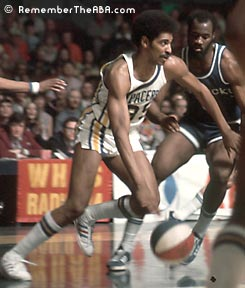

Basketball Legend: Roger Brown
Roger Brown was one of New York City’s brightest basketball prospects. Born in Brooklyn, he attended the University of Dayton, and was a lock to be drafted into the NBA. However, his basketball dreams would quickly be shattered in a horrible scandal filled with false accusations, guilt by association, and illegal interrogation practices by law enforcement. Roger was banned from the NBA and removed from his college team because a man named Jack Molinas, whom Roger was known to hang around, was found guilty of illegal point shaving. Roger Brown was never found guilty of point shaving, his only mistake was having been associated with Molinas.
With his passion and his dream unjustly robbed from him, he had no other choice but to turn to working in a factory for 6 long years. Then the Indiana Pacers were founded and the ABA began to take shape. They made Roger Brown their first player to ever sign with the franchise and gave him another opportunity at his dream. Roger made the most of it, becoming one of the all time-greats, a city councilman, and a community leader, but he has never been truly appreciated for the talent that he was.
Roger Brown died way too young of cancer and could never let go of thinking about the what-ifs. Six all-star seasons were taken from him, he never got to play his college ball, and never got to play basketball in what truly would have been his prime. He should have gone down as one of the greatest players of all time, but never received the attention he deserved. It is time to change that. Inducted into the Hall of Fame in 2013, Roger is starting to finally receive some recognition for his true greatness, but has still not nearly been given his proper respect.
For more information on this amazing story view the documentary "Undefeated: The Roger Brown Story”